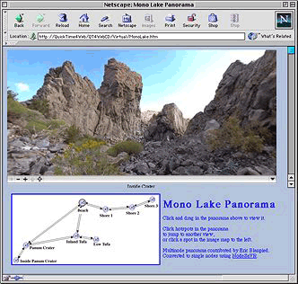

Creating QuickTime VR Panoramas and Object Movies
This chapter is aimed at QuickTime content authors, Webmasters and developers who want to produce VR content for the Web and need to know how to go about doing so. The next chapter, “Chapter 4, QuickTime VR Programming,” is specifically for VR tool developers who need to use VR programmatically in their applications.
If you are new to QuickTime VR, you should read this chapter for an overview of the VR tools that are available, as well as to understand some of the techniques you can apply in producing VR-based content for the Web. The chapter draws extensively on the material in the book QuickTime for the Web (see bibliography).
This chapter is divided into the following major sections:
“QTVR Authoring Studio” discusses the QuickTime VR Authoring Studio software that lets you create interactive virtual reality scenes with point-and-click simplicity.
“QTVR Tools” describes the tools available for setting parameters for QTVR Object movies.
“Creating QTVR Panoramas” describes the equipment and photographic tools you need to produce QTVR movies, as well as the steps to follow when creating VR panoramas.
“Creating QTVR Object Movies” describes how to create QTVR panoramas and QTVR object movies.
“Compositing QTVR With Other Media” discusses compositing QTVR tracks with other QuickTime media.
“Embedding a QTVR Movie in a Web Page” describes how to embed QTVR movies in a Web page.
QTVR Authoring Studio
The QuickTime VR Authoring Studio software lets you create interactive virtual-reality scenes with point-and-click simplicity. It takes full advantage of the Mac OS interface to help you turn photos and computer renderings into 360-degree views. QuickTime VR Authoring Studio is a powerful solution for producing all kinds of QuickTime VR content.
The five modules in the QuickTime VR Authoring Studio suite cover all steps of creating an immersive environment, from controlling camera positions while taking the original photographs to blending the images together to optimizing your finished scenes for Web or CD-ROM use.
You can view finished QuickTime VR movies on computers running Mac OS or Windows software through either the QuickTime plug-in for Web browsers or any application that can play standard QuickTime movies. The QuickTime plug-in for Web browsers makes QuickTime VR movies exciting additions to educational, entertainment, and commercial websites. QuickTime VR Authoring Studio is also ideal for producing large, complex interactive experiences for CD-ROMs.
QTVR Tools
The QTVR Edit Object tool, available for the Mac OS, allows you set many parameters for QTVR Object movies, such as column and row settings, pan and tilt controls, auto-play and animate settings (Figure 3-1).
The QTVR PanoToThumbnail tool allows you to create a small thumbnail-sized linear QuickTime movie out of your QTVR panorama.
The QTVR Converter tool, available for Mac OS and Windows, converts between 1.0 and 2.0 versions of QTVR files using QuickTime Player’s Export command.
The QTVR Make Panorama 2 tool, available for the Mac OS, allows you to create QuickTime VR panoramas from panoramic PICT images.
Creating QTVR Panoramas
If you want to create QTVR panoramas, you’ll need special equipment. This section describes some of the photographic tools you need and the steps to follow when creating VR panoramas.
The special equipment will vary according to your project and circumstances. If you’re rendering images using 3D software, for example, you don’t need a camera. If you’re using a camera, there are additional steps for a camera that uses film, as opposed to a digital camera, that is, you need to scan or digitize the images. Whatever your camera type, if you’re shooting with a fisheye lens, you need to correct the distortion before you can stitch the images.
Basic Equipment
Unless you’re rendering panoramas directly from 3D-modeling software, you need a camera, some lenses, a sturdy tripod, a bubble level, and probably a special pano head for the tripod. The quality of your panoramas will mainly depend on your skill as a photographer and the quality of your equipment.
You can use any point-and-shoot camera or any video camera that takes stills, but you’ll have more control with a camera that allows manual adjustment for exposure and depth of field, and more flexibility with a camera that allows you to change lenses. Most people shoot panoramas using a 35 mm single lens reflex (SLR) camera.
Ideally, you want rectilinear lenses (nondistorting). There are tools that correct for fisheye or barrel distortion, but it’s an extra hassle. Shorter lenses give a wider field of view, which allows you to make a panorama using fewer shots and with more overlap—taking fewer shots is more convenient, and more overlap is better for reasons we’ll get into later. A shorter lens also gives you a taller field of view, which can be important for interior scenes.
It’s difficult to get rectilinear lenses shorter than about 15 mm, and the shorter the lens, the more expensive a nondistorting one is. If you want to shoot with a 9 mm, you’ll be looking through a fisheye.
Digital Cameras
Digital cameras are generally more convenient and less costly to operate than film cameras, as you don’t need to constantly buy, develop, or digitize the film. Digital cameras typically have lower resolution and less exposure range (fewer f-stops) than film cameras, however. Most digital cameras do not allow you to change lenses (there are wide-angle adapters available, but they tend to introduce a lot of barrel distortion).
You’ll be shooting almost exclusively from a tripod, so make sure your camera has a stable and convenient mounting mechanism. Some cameras have to be removed from the tripod in order to change film or memory—avoid them, or face frustration when the camera runs out of film or memory in mid-shoot.
Tripods and Pano Heads
If you’re going to be shooting more than a very occasional panorama, you need a tripod. If you have steady hands, you can shoot exterior panoramas by hand, but the results are usually less than professional. You want the sturdiest tripod you’re willing to lug around, so it doesn’t shift when you rotate it or touch the camera (to press the shutter, change focus, advance the film, or change film, for example).
The more you have to diddle with the camera during a shoot, the more likely you are to shift the tripod—a shutter-release cable and automatic film advance are extras worth considering, along with a large memory module for digital cameras. A bubble level is a must-have item for your tripod, unless you want your panorama to look like it was shot from a roller coaster. You also need a disk, calibrated in degrees, that mounts under the camera, so you can divide the panorama into equal sections for each shot. You can make one yourself using acetate and a marking pen, but you’re better off buying a commercial pano head.
Pano heads, such as those shown in Figure 3-2, are made by companies like Kaidan (http://www.kaidan.com/) and Peace River (http://www.peaceriverstudios.com/) specifically for shooting VR panoramas. The main features a pano head offers are a calibrated disk, detents that let you easily click to a specified angle, and a slider that lets you mount the camera on the tripod so that it rotates around its optical focal point (also called the nodal point).
A tripod normally rotates a camera around a point in the center of the camera body, well behind the optical focal point. This results in a parallax effect, so that nearby objects appear to move relative to distant objects when you pan the camera.
This creates a disturbing artifact in a VR panorama—some people complain it makes them seasick—and it makes it harder to stitch the images together without blurring. If you’re shooting an outdoor panorama with no near objects, the effects are less noticeable and less important. For interior shots, or panoramas with both near-field and distant elements, it matters a lot.
A pano head also allows you to mount the camera vertically (portrait mode) on the tripod, so the widest field of view is up and down, and this is usually how you’ll shoot. You can get a full 360 degree field of view horizontally, no matter what the horizontal field for each image is, simply by adding more images, but your vertical field of view for the whole panorama is limited to the height of the individual pictures. By shooting with the camera in portrait mode, you give the viewer the maximum vertical view.
By convention, or perhaps out of habit, most cubic panoramas are also shot with the camera mounted vertically. In most cases, this does not matter because you stitch your images into squares anyway. To shoot high quality cubic panoramas, however, you need a pano head that can point straight up and straight down, as well as traverse a 360 degree circle in the horizontal plane, all around a common focal point. Cubic VR pano heads with this capability are commercially available.
Nodal Point Adjustment
In order to achieve the best results and the highest quality QuickTime VR panorama, you need to make sure that the nodal point does not vary as you take your pictures. This means that you need to make sure that the picture does not look any different as you pan or tilt the camera around, because for a cubic panorama you may be tilting.
To accomplish this, you want to capture a scene where there are some relatively close objects––about six feet or so away––and then get background that is far away (effectively infinity or at least 30 feet away). And then you want to pan the camera back and forth and look through the viewfinder to see if the edge of that object in the foreground. If you see anything appearing out from behind that you did not see before, then you know that you’re not adjusted properly. So you need to move the camera forwards and backwards, and adjust it so that as you rotate it all the way to one side where the object is still visible, you don’t see anything from the back suddenly becoming visible again. You don’t want anything moving from the front or behind the object moving.
Planning
If you’re shooting a multinode panorama, lay out the center point for each node, making sure you have a clear view of a distinct entry point for each adjacent node. It helps orient the viewer if you begin a node facing the same direction you would have traveled from the previous node (you can specify a different initial viewing angle when entering a node from other nodes).
It takes longer to shoot a panorama than it does to shoot a single photo, so make sure you have enough time and enough light to do the job.
You can’t shoot a 360 degree panorama with the sun behind you—the low light angle that looks so good in one direction will shine directly into the camera when you turn around. High overhead light is generally best—and a little overcast can be a godsend—so plan your shoot accordingly. Of course, if you’re shooting a cubic panorama, then you’re going to be aiming the camera into high overhead light.
There are several ways of getting around that. One way, which is relatively easy, is to lock the exposure, so that as you rotate the camera up and point it towards the sun, the exposure won’t change. You don’t really care if the sun is all saturated to white. Just adjusting the exposure so that it doesn’t change can really solve it.
Shooting
Shooting a QTVR panorama requires not only careful planning, but also attention to detail. Some useful tips for shooting a QTVR panorama:
Pick a good spot. A panorama with some near-field elements is generally more interesting than one where everything is the same distance away.
Set up and level your tripod. Height matters: a low panorama can look strikingly different than a high panorama of the same scene.
Check the lighting in all directions, preferably with a light meter.
Make sure the camera has enough film.
Pick your lens. You generally want a taller field of view for an interior shot—a 15 mm lens is the standard. For exterior shots, 24 mm is a common choice. Maximize the vertical field of view by shooting with the camera on its side, if your equipment allows you to attach it to the tripod this way. For cubic panoramas, a 15 mm lens is the standard, indoors or out. You will end up with six images, each with a field of view exactly 90 degrees in both dimensions. You can crop a wide angle down to 90 degrees, and you can stitch overlapping images together.
Adjust the camera on the pano head so that the focal point of the lens (sometimes called the nodal point) is exactly centered over the tripod’s axis of rotation—this is critical to avoid parallax problems if there are objects in the near field.
Decide how many shots you’ll take, at what increment of degrees, based on your horizontal field of view. You need a minimum of 10% overlap for any stitching software to work with, and some software requires 30%. Apple’s QuickTime VR Authoring Studio (QTVRAS) works best with 50% overlap, especially if the lighting is uneven. More overlap (up to 70%) is better, provided you have sufficient time and film. It’s common to shoot a panorama as a sequence of 12 images at intervals of 30 degrees—if your horizontal field of view is 60 degrees, this allows a 50% overlap between images.
If you can set detents for a certain number of degrees on your pano head, do it now, so you can click, click, click your way around the circle.
If you have any doubt about the exposure, use a gray card. It’s not a bad idea to shoot two exposures from each position, one with a gray card in the frame. If you don’t know what a gray card is, go down to your local camera store and find out—your photography will improve dramatically.
If the lighting is uneven, there are several ways you can compensate. If you’re stitching with QuickTime VR Authoring Studio, you can shoot with automatic exposure and a 50% overlap: the stitching software will create a smooth blend from frame to frame to compensate for changes in brightness. If you’re using a fixed exposure for all frames, you can bracket the exposure, shooting two or three pictures from each position. You can cut and paste from different exposures using a graphics editing program afterwards.
You have a tough decision to make if you bracket the exposure. Changing the exposure multiple times for each shot makes it more likely that you’ll make a mistake or nudge the tripod; shooting the whole panorama multiple times, each with a different exposure, makes it more likely that the registration or the light will change between two shots of the “same” scene. There’s no right answer, so do whatever works best for you.
If you can’t get the perfect exposure, underexpose slide film and overexpose negative film. This results in a darker slide or a darker negative. You can get additional detail out of a dark area by pushing more light through it when scanning or printing, but a transparent area has no information that can be recovered.
If you have people in the panorama, make sure they hold completely still while you shoot all the frames they appear in. If you’re shooting with a 30% overlap or less, you may be able to center them in a frame so they appear in only one image. You can do this by centering the first frame on your human subjects, or by positioning the subjects at the center of a subsequent frame—it’s generally a bad idea to adjust the center point of any frame after the first, as it makes the stitching awkward.
If people must be moving, it is better for them to be moving toward or away from the camera, rather than side-to-side.
Once you start shooting, work in a rhythm—gray card, shoot, film advance, shoot, film advance, rotate, repeat. Stay focused. It’s repetitive, and it’s very easy to find yourself in the middle of a panorama wondering whether to shoot or rotate. When in doubt, shoot another exposure; it’s easier to discard a duplicate than to go back and reshoot the whole thing because an image is missing. With practice, you can often shoot a whole panorama in under a minute.
Image Preparation
If you’re shooting film, it needs to be developed and digitized. You can get good quality results in a convenient format by having a photo lab print directly to CD. Otherwise you need to scan the prints, slides, or negatives after developing.
It’s normal for the print maker or CD scanner to optimize each image for color and brightness using a scene-balancing algorithm (SBA). You generally want this feature turned off for a panorama because you’re going to stitch them all into a single image, and you don’t want different parts of the image processed differently. Some photo labs are much better about this than others, but most will process the film again at no charge if you ask for special processing up front and the technician does it wrong the first time.
If you’re working with prints, you can get fairly high-resolution images with an inexpensive scanner. For slides or negatives, you need a transparency adapter or a special film scanner, which is more expensive. To get the same scan quality from a 35 mm slide or negative as you’d get from a 3" x 5" print, you need about 5 times the scanner resolution. Work in the highest resolution you can at this point. Even if your work will end up at 72 dpi and JPEG-compressed, scan it in at 300 dpi or higher from a print or 1500 dpi or higher from a slide or negative. Make it a rule to throw information away as late in the game as possible—you’ll never regret it.
If you’re working with a flatbed scanner, use tape to create a frame so that all your images are scanned in with the same registration. You want the tops and bottoms of all your images to line up nicely. Once your images are scanned in, crop out the tape so all the images have the same dimensions.
Give your images sequential filenames, like Baybridge01, Baybridge02, and so on. Use a leading zero for numbers below 10. If your pano contains more than 99 images, use two leading zeroes for numbers below 10 (001, 002, . . .) and one leading zero for numbers below 100 (010, 011 . . .). This makes it easier for stitching software to process the images later.
If the images weren’t shot with a rectilinear lens, you need to correct the distortion, or if you have sufficient overlap, correct the sides––that is, trim the width of the picture to remove the major distortion at the corners of the image. Two useful tools for this are DeFish for the Macintosh (http://www.worldserver.com/turk/quicktimevr/fisheye.html), and Panorama Tools, available for download at no cost from Helmut Dersch (http://www.fh-furtwangen.de/~dersch/), as Photoshop plug-ins for both Macintosh and Windows.
Once your images are in digital format, you may want to modify them to adjust for exposure and lighting. If you bracketed your exposures, you may want to do some cutting and pasting to replace dark or washed-out areas of an image with better versions from an alternate exposure. This is also a good time to remove stray cats or errant pigeons using the rubber stamp tool.
Don’t adjust the sharpness, punch up the contrast and saturation, or apply compression yet—that comes after the stitching.
Stitching Images
There are several software packages available for stitching your images together, including these four:
Apple’s QuickTime VR Authoring Studio (http://www.apple.com/quicktime/resources/tools/qtvr.html)
Helmut Dersch’s free PT Stitcher (http://www.fh-furtwangen.de/~dersch/)
VR Toolbox’s VR Worx (http://www.vrtoolbox.com)
RealViz’s Stitcher (http://www.realviz.com), a highly-regarded professional panoramic stitching tool, which includes the automatic placement of the panoramic source images.
This is by no means an exhaustive list. The interface and feature set of each tool is different. PT Stitcher is constantly updated and is very good at handling large image sizes. It does cubes as well as cylinders. VR Authoring Studio, on the other hand, has a sophisticated stitching algorithm that compensates for different exposure settings in overlapping images. Spin Panorama has a simple interface, requires only a 10% overlap between images, and allows you to set registration points manually. VR Worx has a rich feature set that has been updated for QuickTime 5. It does cubes as well as cylinders. Stitcher does simple cylinders, multi-row panoramas, and cubic VR.
A good source of links to current stitching tools is the International QuickTime VR Association (IQTVRA) website (http://www.iqtvra.org).
Most tools query you for the number of images in your panorama, some of your camera settings, such as lens size, and the names of the image files (or a folder containing image files with sequential filenames).
The process of stitching creates a single image from your sequence of images. The overlapping portions of the images are blended together and the final image is warped onto a cylindrical, the face of a cube, or an equirectangular projection. Figure 3-3 shows a series of still images and a composite image after stitching.
A cylindrical panorama will use a single image stitched together from all exposures. A cubic panorama can be created from either six faces of a cube, each face stitched from two or more exposures, or from a single equirectangular projection, stitched together from all exposures.
The stitched image is traditionally rotated 90 degrees counter-clockwise. This is done because the image is typically very wide and, historically, the PICT image format had a width limit but no height limit. Since the PICT format no longer has such a limit, this is no longer a requirement, and the stitched panorama may have the natural orientation.
Some of the stitching tools can do more than stitch. They can tile, add previews and hot spots, and optimize for Web delivery. They can all stitch images together into a single image file, however, and that’s generally what you want to do first. Even if your chosen tool can take you directly to Web-ready output, you normally want to export the stitched image as a PICT file and touch it up with a graphics editor before continuing.
Making Panoramas with 3D Software
If you use 3D software to generate your panoramas, you can generally bypass all the steps we’ve discussed so far. Just tell your software to generate a panorama image in PICT format (you may need to rotate it 90 degrees in a graphics editor as well).
3D modeling packages that generate panorama images directly include Infini-D, Strata 3D, form•Z, and Bryce.
If your 3D software doesn’t generate panorama images, create a set of overlapping images instead, then stitch them together as if they were photographs. To create the images, select a viewpoint for your virtual camera and render a series of images, rotating the “camera” by a fixed number of degrees each time.
For example, if you set your field of view at 120 degrees and rotate the virtual camera by 60 degrees for each image, you can render a series of six images with 50% overlap that can be used to create a panorama—0–120 degrees, 60–180 degrees, 120–240 degrees, 180–300 degrees, 240–360 degrees, and 300–60 degrees.
Treat the rendered images as you would a series of overlapping photographs—see “Stitching Images.”
Touch Up
Once you have a single stitched image or a rendered panorama image, you generally want to open it in a graphics editing program such as Photoshop and optimize its appearance. This typically involves sharpening (using the paradoxically named unsharp mask operation), enhancing contrast, boosting color levels, and performing gamma correction.
You can’t compress the image yet—that comes later—but you can shrink the image file size by reducing the pixel dimensions. You can often shrink the image by scaling at 70% without noticeable loss in detail. If this makes the image too small visually, you can scale the image up during playback.
Just set the window size and default FOV.
You may want to rotate the image 90 degrees so it looks more natural while you’re working on it. Just remember to rotate it back when you’re done.
Tiling, Compressing, and Optimizing
When your image looks the way you want, it’s time to take the final steps to get it ready for Web delivery. The image needs to be diced into tiles, compressed, and optimized for Web delivery. In most cases, this means re-importing the image into the tool you used for stitching, and performing the tiling and compression operations. In other cases, it means using separate tiling and compression tools, such as QTVR Make Panorama 2.
Tiling
Tiling breaks the image into pieces so it can be played back without loading the whole image into memory. This improves performance and reduces system requirements, especially for large panoramas. It also allows people to begin viewing and navigating the panorama while it downloads. If your software gives a choice of tile sizes, use larger tiles for disk-based presentations and smaller tiles to make a panorama more responsive during Web download.
Important: The pixel dimensions of your image file should be evenly divisible by 96 in the long dimension and evenly divisible by 4 in the narrow dimension. This is important for tiling. This is only true if you’re tiling into the standard 24 x 1 tiling. If you’re good with prime numbers, you can use other tiling schemes, but the resultant tile size should be divisible by 4 in each dimension (no longer a requirement if all clients use QuickTime 3 or greater).
You generally want a single row of tiles for your panorama, but if it’s tall enough that the default field of view is only 1/2 or 1/3 the full height, you should use 3 or 4 rows of tiles for Web delivery—viewers can navigate the default view while the rest of the panorama downloads.
Each tile is compressed separately, which is why you shouldn’t compress the image prior to tiling—the image would have to be decompressed, tiled, and recompressed, which would degrade it badly.
Compression
Compression reduces the image size, which is critical for Web panoramas. It also reduces image quality, particularly sharpness, and slows down performance (each tile has to be decompressed before it can be displayed), so it’s a trade-off.
JPEG compression usually gives the highest quality for the bandwidth, though it does get blurry if you compress aggressively. Cinepak compression gives more responsive playback—especially on older computers—because it’s easier to decompress. But Cinepak quality is lower. Sorenson compression isn’t nearly as efficient with still images as it is with motion video, but it scales up well. JPEG images generally look good scaled up to 1.25—for more aggressive scaling, try Sorenson instead.
Optimization
Once you’re done with tiling and compression, you should optimize Web-based panoramas for download. Panoramas are usually pretty large—300 Kbytes to 3 Mbytes—so you don’t want to leave your viewers drumming their fingers the whole time. There are two parts to optimizing for download—setting a preview and reordering the tiles.
If you’re using VR PanoWorx or Panorand Tools, you can set the preview using the same software that does the tiling and compression. If you created your panorama using QuickTime VR Authoring Studio or Spin Panorama, on the other hand, you need to use another tool, such as converter (http://www.vrtools.com/) or QuickTime Player, to set the preview.
Important: You can use QuickTime Player to set the preview only if you install the VR Flattener extension. Installation requires you to restart your computer. This Flattener is automatically included in QuickTime in the QuickTime VR Authoring extension.
Setting the Preview
To set the preview using QuickTime Player (the process is similar for other tools), you follow these steps:
Open the panorama in QuickTime Player.
Choose Export from the File menu, then choose Movie to Fast Start QuickTime VR Movie from the pop-up menu.
Click the Options button to bring up the preview dialog box. The settings in this dialog box determine what the viewer sees while the panorama is downloading:
If you don’t select Create Preview, the viewer sees a black grid with gray lines (similar to the holodeck grid in Star Trek). The grid is filled in as each tile downloads.
If you click the Create Preview box, a small low-resolution preview image is downloaded ahead of the panorama tiles. The viewer can pan, tilt, and click hot spots almost immediately and has at least a vague sense of what the panorama looks like. The resolution of the image improves one area at a time as each tile downloads.
You normally want a low-quality JPEG preview, but you can choose any QuickTime compression settings you like. A low-quality JPEG is typically 1/8 the file size of a high-quality JPEG.
A quarter-sized preview is 1/16 the file size of a full panorama at the same quality setting; a half-sized preview is 1/4 the file size. Multiply the file size reduction by the compression reduction (low quality vs. high quality) to see how long it will take the preview to download compared with the panorama.
The preview is scaled up to fill the view window—you can choose to have it blurred or not, whichever you prefer.
If you prefer, you can use another program to create the preview image. If so, click the Import Preview Image box. You are prompted for a filename when you click OK.
Select the kind of preview you want and click OK, then click Save.
Your panorama now has a preview image or a preview grid that the viewer can use for navigation during the download, and the high-resolution tiles are arranged so that the initial view is received first.
As a final step in optimization for Web delivery, you may want to run your panorama through delivrator (http://vrtools.com/). This program rearranges the tiles so that the default view downloads first, then the tiles to the left and right, then the next pair of tiles to the left and right, and so on around the circle. If there are multiple rows of tiles, the center or default row loads first, then the rows above or below.
Though this functionality is available in the QuickTime VR Authoring extension accessible through QuickTime, delivrator provides more control over the optimization, especially for multinode movies and QTVR movies with wired sprites.
Hot Spots and Multinode Panoramas
Hot spots are areas in a panorama that link to a node, file, or URL. A node can be another panorama or an object movie. Multinode panoramas are created by linking individual panoramas with hot spots, but hot spots can be used as general-purpose links from a panorama to any URL.
There are several tools that you can use to add hot spots to panoramas, such as QuickTime VR Authoring Studio, PanoWorx, and a useful freeware tool called VRL that you can download from http://www.marink.com.
There are three kinds of hot spots: node, URL, and blob.
A node hot spot links to a panorama or object movie within a multinode QTVR movie file.
A URL hot spot links to a URL—often another panorama in a separate file.
A blob hot spot just tells the application playing the QTVR that a particular hot spot has been clicked. If your VR is playing in the QuickTime plug-in, this links to the URL specified in the corresponding
HOTSPOTn parameter in your HTML.
For CD-based panoramas, it’s often more convenient to use node hot spots and put all the panorama nodes in a single file. For Web-based panoramas, it’s generally best to use blob hot spots and keep each node of a multinode panorama in a separate file; you can link a blob hot spot to a particular destination using the HOTSPOTn parameter in the <EMBED> tag of your HTML, or you can embed it in a movie as a URL using Plug-in Helper.
Note: Blob hot spots can also be interpreted by other software that can contain QuickTime VR movies, such as Macromedia Director or Tribeworks’ iShell.
You can link a blob hot spot to another panorama, any QuickTime movie, any media that QuickTime can play, or any URL that the viewer’s browser can handle. You can use the TAREGET parameter, as part of the <EMBED> tag or through Plug-in Helper, to target a hot spot’s action to the QuickTime plug-in, QuickTime Player, a particular browser frame, a particular browser window, or the default browser window.
You can link a blob hot spot to a QuickTime movie that has a QTNEXT to another panorama (the QTNEXT can be in the HTML or embedded in the movie using Plugin Helper). This allows you to put transition movies between VR nodes.
You can have as many as 255 hot spots in a given panorama. They can be any size and any shape.
Note: There was an “off by one” error in the QuickTime plug-in for QuickTime 4.1, which caused HOTSPOTn to activate the link specified for HOTSPOTn+1. The workaround was to limit the hot spots in any node to 127, not to use consecutive hot spot numbers in the same node, and to use two HOTSPOT parameters (both n and n+1) in your HTML to specify the link. The problem was fixed in QuickTime 4.1.1.
For examples of using QTVR hot spots, see the section “Embedding a QTVR Movie in a Web Page.”
Creating QTVR Object Movies
You create a QTVR object movie by taking and digitizing a series of photographs (or rendering a series of computer-generated images) that show an object from multiple perspectives, typically by rotating the object on a pedestal or turntable.
Once you have a series of digital images, you generally need to retouch them with a graphic editor to remove the pedestal and background. This by itself gives you a 3:1 compression. You then assemble the images into an object movie using authoring software such as QuickTime VR Authoring Studio, Widgetizer, or PanoWorx.
Equipment Needed
Unless you’re generating your images directly from software, you need a camera, lights, a backdrop, a turntable or pedestal to rotate the object, a hot glue gun (this is really essential), and probably an object VR rig that allows you to swing the camera through a vertical arc.
You generally don’t need as flexible or as high-resolution a camera for object movies as you do for panoramas. You’re photographing a fixed object under controlled lighting with a shallow depth of field, so you have a lot fewer variables to deal with.
A 35 mm SLR camera with a telephoto or macro zoom lens is the standard for museum-quality work, but a good digital camera can produce comparable quality, especially for Web delivery, and is vastly more convenient. A digital video (DV) camera that can take still frames and has a FireWire connector is ideal for this kind of work, provided you don’t need higher resolution than DV can offer (for the Web, you generally won’t).
You typically take a lot of shots for object movies—36 exposures for a rotation, and up to 18 rotations to cover an object from top to bottom. That’s 648 exposures. Unless you enjoy changing film, a digital camera that can download images to your computer in mid-shoot is the way to go, and the faster the better.
In addition, your camera may be swinging on a rig several feet in the air, making it difficult to change film, look through the viewfinder, or work the shutter. A film camera with a lot of film, a shutter release cable, and a motor drive can be made to work (though you may need a ladder to look through the viewfinder), but a digital camera that can use a video monitor as a viewfinder, has a remote control, and downloads over FireWire makes life a lot easier.
You need a set of lights to illuminate your object and a backdrop to shoot against. A black backdrop usually works best, but you can also use a white backdrop effectively—especially if you’re shooting a black object.
Use low light with a black backdrop and hot lighting with a white backdrop, so the background is completely black or white. It makes it easier to composite the background out later.
You generally want to rotate your object on a pedestal or turntable that’s stable and easy to rotate in increments of 5–10 degrees. For a single-row object movie, a lazy susan can be made to work. If you plan to shoot the object from below, you also need a pedestal, preferably thin and black. The hot glue gun allows you to pose a shoe on it’s toe or a raygun upright on its handle.
There are some useful motorized turntables available from companies like Kaidan (http://www.kaidan.com/) and Peace River (http://www.peaceriverstudios.com/) that are designed for this kind of work. Some of them include a rig for vertically aligning your camera and remote-control software that works directly with QuickTime VR Authoring Studio or Widgetizer.
You can get a really big turntable that you can use to rotate a car, but it costs as much as you would expect. Unless you expect to use it a lot, consider using someone else’s. Studios like eVox Production (http://www.evox.com/) are happy to power up the big turntable so you can spin a sport utility vehicle.
If you’re shooting a single row object movie, you can position your camera using a tripod. Get a really sturdy one—you won’t be carrying it around, and it’s critical that the camera not jiggle around during the shoot.
For multirow object movies, you need a rig that can swing the camera through a precise arc. A commercial object VR rig is the way to go. They range from moderately pricey manual models to really expensive motorized jobs with turntables and remote control software. The main manufacturers are Kaidan and Peace River, and the better models can shoot an entire object movie, top to bottom and round-and-round, under automated control from QuickTime VR Authoring Studio or Widgetizer.
Shooting Tips
You’re going to shoot a series of exposures, keeping your camera at precisely the same alignment with your object, while you rotate the object around its center.
If you’re shooting a multirow object movie, your going to repeat the shoot with the camera at different vertical positions, but otherwise with the exact same alignment, rotating the object to exactly the same positions.
This can be extremely finicky and painstaking work, or it can be a walk in the park, depending entirely on your equipment.
You may need to use a hot glue gun to get your object stable and positioned properly, especially if you’re shooting it from underneath. Don’t be stingy with the glue—you don’t want the object to sag in the middle of your shoot.
You generally want to shoot against a black backdrop, but you may need to use a different color, particularly if your object is black and you plan to matte in a different background later.
It’s a good idea to include a small marker object in the frame (but not on the turntable) in case you need to precisely align your images later. This is particularly important if you’re shooting film and scanning it, or you’re working with inexpensive equipment that isn’t rock solid. You’ll crop or edit the marker object out after the images are digitized.
You normally want to shoot an exposure every 10 degrees of rotation for a total of 36 images. You can save film and make the movie smaller by shooting 24 exposures 15 degrees apart, but the motion of the object will be jerky. Of course, you don’t have to shoot the object from every angle—maybe the back isn’t interesting—and four exposures 90 degrees apart provide a complete view.
For a multirow movie, you typically want to shoot at 10 degrees vertical increments as well. A full top-to-bottom shoot requires 18 rows, but people rarely shoot from more than 10 degrees to 30 degrees underneath.
Shooting from directly underneath is almost impossible—you can do it with a glass turntable or by suspending the object, but matching the rotation angles and camera registration with the rest of the shoot is difficult. Expect to spend many hours with Photoshop trying to get it just right afterward. Of course, if you’ve been hired by a shoe company, that may be what you’re getting paid for—just don’t underestimate the effort.
Do a dry run, looking at the object from every angle and rotation. Set up your lighting so you don’t get glare or lens flare, and the object is well lit at every angle. It’s important not to change the lighting, exposure, or focus during the shoot. Be sure to set your camera for fixed exposure, not auto-exposure.
Now you’re ready to take some pictures. With the right camera and rig, you can automate the whole shoot and capture your images directly into QuickTime VR Authoring Studio, Widgetizer, or VR PanoWorx. Otherwise, you have a lot of clicking and rotating to do.
Generating 3D Imagery
If you’re generating images directly from a 3D modeling program, your task is much simpler. Generate a series of images of your chosen object at 10 degrees intervals of rotation, rendered with your favorite texture maps and lighting effects.
If you’re doing a multirow movie, start from the highest point—normally 0 degrees or directly overhead—do a row, drop 10 degrees and do another, until you’re as low as you need to be.
Note: Save the images with sequential filenames, using a leading zero for numbers below 10—for example, Row01shot01, Row01shot02 . . . Row01shot36, Row02shot01, and so on to Row18Shot36.
You may be rendering as many as 648 images, so allow plenty of time and disk space. It may literally require days to render. You might want to render a series of images at 45 degrees (45 images) or 90 degrees (12 images) to make sure you’re happy with your settings before you commit to a full series of 648.
Image Preparation
The amount and type of image preparation you need to do depends on how you created your images.
If you shot with film, you need to develop to CD or scan in prints, slides, or negatives (which you also need to “print” digitally). See “Image Preparation” in the section on panoramas for some tips on digitizing. This process is likely to introduce some jitter from frame to frame, so shoot your images with a marker object in the frame and use it to precisely align and crop your images.
If you used a camera of any kind to generate your images (as opposed to using 3D modeling software), you probably need to retouch every image using Photoshop or a similar program.
You generally need to delete the pedestal or supports from each image by hand.
You should probably select the entire background and erase it to a single color in every image (it may all look black, but it probably isn’t all #000000 black black). A solid color compresses better (3:1), and you can easily make a solid color transparent.
People commonly matte a background image into each frame at this point. You can save yourself a lot of work, and a lot of bandwidth, by making the background transparent and compositing a background image into the movie later.
You have the option of compressing the images now or when you create the object movie. You can probably get finer control of the compression for each image by doing it now, but you can take advantage of the similarity between adjacent images, resulting in a smaller file, if you compress the whole movie at once. If you compress the images now, be sure to use the same compressor for all the images—don’t use JPEG compression on one and GIF compression on another, for example.
Making the Object Movie
You need special software to create an object movie. Some software that does the job includes QuickTime VR Authoring Studio, VR PanoWorx, and Widgetizer.
The exact procedure for making an object movie depends on the tool you choose. You generally specify the number of rows, the degrees of rotation and number of images per row, the initial view, and the folder that contains the images, and then the software creates the movie.
You also choose a compressor at this point. Photo JPEG compression usually yields the sharpest images, but it tends to create large files. Cinepak compression takes advantage of the similarity between images, resulting in much smaller files, but it provides only moderate quality at low bandwidths. Sorenson is probably the best compressor for Web delivery, as it gives high quality at low bandwidths, taking good advantage of image similarities. You may want to create key frames a little more often than normal so the movie is more responsive to random access.
Some software documentation recommends that you save your object movie with the .obj file extension. Do nothing of the kind—use the .mov extension.
Compositing QTVR With Other Media
You can mix QTVR with any other kind of QuickTime media, including still images, motion video, music and sound, text, wired sprites, and live streams. The techniques for compositing with panoramas and object movies are somewhat different, however.
Authoring tools such as the NodeMedia QTVR Authoring Tool are available for adding animations, sounds, 3D objects, and transitions to QTVR nodes.
Compositing with VR Panoramas
A VR panorama is basically a still image that the viewer can pan around in, so a single-node panorama is a movie with a single video frame. Consequently, no time passes in the movie time line, no matter what parts of the panorama are displayed and no matter how much time passes in the real world. The movie is essentially paused at the same frame.
A multinode panorama has one video frame per node, so the movie advances by one frame in its time line, or jumps to a particular frame, when the viewer changes nodes. Once it gets to its new node, the movie is again paused.
Like any still image in QuickTime, a VR panorama can be given an extended duration. The techniques for compositing a VR panorama with other media are similar to those for adding a still background image—copy the panorama, select the media you want to add the panorama to, and choose Add Scaled.
Let’s look at some examples—adding a picture frame, a sound track, and a wired sprite controller to a VR panorama. We’ll show you how to do the editing using QuickTime Player, but you can do essentially the same things using any QuickTime editor that understands panoramas, such as the one in LiveStage Pro.
Adding a Picture Frame to a VR Panorama
You can add any kind of visual frame to a VR panorama, and it’s fairly easy to do. This can be the equivalent of a simple picture frame, an elaborate screen, or even a large image—similar to a background image for a Web page. You can superimpose the panorama on the frame, or make part of the frame transparent and let the panorama show through it.
Here are the steps for adding a frame to a panorama:
Open the frame image in QuickTime Player. Select all. Copy.
Open the panorama in QuickTime Player and choose Get Movie Properties.
In the Properties window, select Movie Controller.
Choose Select All in the Edit menu, then Add Scaled (Shift-Option or Shift-Ctrl-Alt keys, Edit menu). This adds the frame image on top of the panorama. Both the frame and the panorama are aligned in the upper left corner of the display window.
Use the left pop-up menu in the Properties window to choose VR Panorama Track (not the QuickTime VR track). Choose Layer in the right pop-up menu and decrement the layer number until the panorama is on top of the frame.
Use the left pop-up menu to choose Video Track 1 (the panorama image). Choose Size in the right pop-up menu, click Adjust, and drag the panorama to the center of the frame (or wherever in the frame you prefer). Click Done. Your panorama is now floating on a background image.
If you want the panorama to show through the frame in step 5, rather than sitting on top of it, increment the panorama’s layer until it disappears, then set the frame image graphics mode to transparent, blend, or alpha, as appropriate, by choosing Video Track 2 from the left pop-up menu and Graphics Mode from the right pop-up menu.
Reset the movie controller to the QTVR Controller and save as a self-contained movie.
The panorama is far more responsive to user input if it’s floating on top of the frame image than if it’s showing through a hole. This is particularly noticeable on slower computers. If you shade the edges of the frame image surrounding the panorama, you can still create the appearance of the panorama being under the frame.
Adding a Sound Track to a VR Panorama
Adding a sound track to VR panorama is a little tricky because the sound track is time based and the panorama is not. We can stretch the duration of the panorama to match the sound track using the Add Scaled, but there is also the issue of the controller.
The VR controller provides no way to play the audio—the movie is always paused—but the standard movie controller doesn’t allow the viewer to pan or zoom in the panorama.
Here’s how you do it:
Open the panorama in QuickTime Player and choose Get Movie Properties.
In the Properties window, select Movie Controller.
Choose Select All in the Edit menu, then Copy.
Open a sound file—such as a WAV, MP3, or MIDI file—or a sound-only QuickTime movie, in QuickTime Player. Choose Select All from the Edit menu, then Add Scaled (press Shift-Option or Shift-Ctrl-Alt while opening the Edit menu). This adds the panorama to the sound track, scaled to have the same duration.
Open, for example,
Playbutton.movin QuickTime Player. Choose Select All, then Copy.Click anywhere in the panorama sound movie. Choose Select All in the Edit menu, then Add Scaled (Shift-Option or Shift-Ctrl-Alt keys, Edit menu). This adds a Play button on top of the panorama. The button is aligned in the upper-left corner of the panorama.
Use the left pop-up menu in the Properties window to choose Sprite Track. Choose Size in the right pop-up menu, click Adjust, and drag the button to the bottom of the frame (or wherever you prefer). Click Done.
Reset the movie controller to the QTVR Controller and save as a self-contained movie.
Your panorama now looks and acts like any VR panorama, but it has a Play button floating on it. Clicking the Play button plays any audio tracks. If the viewer is downloading the movie over the Web, clicking the Play button plays as much of the audio as has downloaded.
If you’d prefer to have your audio start as soon as the file is downloaded, use a wired sprite authoring tool to create an invisible sprite that automatically starts the movie. You can also use a sprite to set the movie looping.
If you want a more sophisticated audio controller, use a wired sprite authoring tool such as LiveStage Pro to create one.
Another useful tool for adding sound to a VR panorama is Squamish Media’s soundsaVR. Not only does it make adding sound to a panorama drag-and-drop easy, it allows you to add directional sound—sound that pans left or right and changes volume as you look toward or away from it.
Authoring tools such as VRHotWires http://www.vrhotwires.com/ are also useful for adding sound to a VR panorama.
Adding a Wired Sprite Controller to a VR Panorama
You can use wired sprites to add your own controller to a VR panorama. You might want to do this for aesthetic reasons, or to create a custom controller that mixes panorama controls with other controls—such as a Play/Stop button or volume control—for movies that contain both panoramas and time-based media.
In addition, if you use a VR panorama within a SMIL presentation, you need to add a sprite-based controller to enable the user to zoom in or zoom out—panoramas do not have a VR controller attached to them when viewed as part of a SMIL presentation.
You can create a wired sprite VR controller—using an authoring tool such as LiveStage Pro—by assigning sprite actions such as SetPanAngle and SetFieldOfView to your sprite buttons.
Other authoring tools such as VRHotWires http://www.vrhotwires.com/ are also useful for adding wired actions to QTVR movies.
You generally want the panorama to pan or zoom smoothly while a button is pressed, and there’s a little trick to making that happen. It works like this:
Create a sprite variable and have your sprite set the variable to 1 in response to a mouse-down event.
Have the same sprite set the variable to 0 in response to a mouse-up event.
Have the sprite read the variable in response to the idle event and change the pan angle or field of view only if the variable is true. You can control the speed of the pan or zoom by setting the idle event rate.
Adding a wired sprite controller to a VR movie is straightforward:
Open the panorama in QuickTime Player and choose Get Movie Properties.
Use the Properties window to select Movie Controller.
Open the movie that contains your wired sprite controller in QuickTime Player. Choose Select All, then Copy.
Click anywhere in the panorama movie. Choose Select All in the Edit menu, then Add Scaled (Shift-Option or Shift-Ctrl-Alt keys, Edit menu). This adds the wired sprite controller on top of the panorama. The controller is aligned in the upper-left corner of the panorama.
Use the left pop-up menu in the Properties window to choose Sprite Track. Choose Size in the right pop-up menu, click Adjust, and drag the controller to the bottom of the frame (or wherever you prefer). You can use the red handles to stretch or shrink the controller if you need to. Click Done.
If you’re trying to reposition a small sprite, you may find that the red handles overlap, leaving you nowhere to click and drag. Try choosing Double Size in the Movie menu; this will double the displayed size and create gaps between the handles.
If you want the controller to have a transparent background, choose Graphics Mode in the right pop-up menu and set the graphics mode to transparent, or to one of the alpha modes.
Reset the movie controller to the QTVR Controller and save as a self-contained movie.
Compositing with Object Movies
Object movies are a unique type of time-based media, so compositing them with other QuickTime media can be a little tricky. The key points to understand are:
Each view in an object movie—whether it’s a single image or an animation—has the same duration.
There are the same number of views in any row.
Consequently, dragging the mouse—left, right, up, or down—jumps in the movie time line by a fixed amount of time to reach the next view.
That fixed amount of time is not calculated when the movie plays—it is stored as a constant in the VR track of the movie when the movie is created.
If you change the duration of any part of an object movie—by using Cut, Paste, or Delete, for example—dragging jumps by the wrong amount of time and navigation won’t work properly any more.
You can add media to an object movie, without changing the object movie’s duration, using the Add or Add Scaled command.
An object movie can be set to play all the frames of a view when the user drags to a new view—it can be set to play them once or loop them continuously.
When the frames of a view are played, a portion of the movie time line is being played—any media added to that part of the time line also plays.
To add media to an object movie, open the movie in QuickTime Player and use the Properties window to assign the Movie Controller—the QTVR Controller doesn’t allow editing (you can restore the QTVR Controller when you’re done editing).
With these fairly simple guidelines in mind, you can composite a wide variety of media with VR object movies.
To do things that these guidelines simply don’t allow—like adding continuous background music—put the media in separate movies and integrate them with the object movie using a QuickTime container such as SMIL, a Web page, or Director.
Now let’s look at some specific examples—adding still images, sound, motion video, and sprites.
How You Can Add Still Images to an Object Movie
Adding a still image to an object movie is fairly easy—you copy the still image and add it to the object movie using the Add Scaled command. There are three practical applications—adding a background, adding a frame, and adding a logo.
Many content authors who make object movies painstakingly matte a background image into every frame using Photoshop. You can save a great deal of work and a lot of bandwidth by adding a background image to the whole object movie at once using QuickTime Player. And since you’re downloading only a single background image for the whole movie, you can use a much higher-resolution image.
The trick to making this work is either to create the object movie images on a solid background color, so that color can be made transparent, or to add an alpha channel to the images.
Using an alpha channel creates a more visually seamless composition, but it’s almost as much work to add an alpha channel to every image as it is to matte in a background image. Using an alpha channel also requires 32-bit color, which uses more bandwidth than 8-bit, 16-bit, or 24-bit color, and it restricts you to using a 32-bit color compressor—you can’t use JPEG or Cinepak, for example.
Consequently, a solid background color is a more practical choice. Be sure to choose a background color that doesn’t appear anywhere in your object, or those areas of your object will also become transparent (you can use this fact intentionally to create windows in your object).
Similarly, a frame or foreground image adds a lot of character to an object movie without using much bandwidth—and because it’s a single image you can use a very high resolution.
The benefits of adding a logo are obvious—every copy of the movie is an advertisement for your company. The logo can also be a live link to your website. You generally want to create your logo on a solid color background or with an alpha channel, so it composites cleanly over the object movie. In this case, it’s usually better to use an alpha channel than a solid color. Since it’s a single small image, the extra effort and bandwidth required for an alpha channel are minimal (and well worth it for the improved visual quality).
To add a still image to an object movie, you follow these steps:
Open the still image in QuickTime Player. Select all. Copy.
Open the object movie in QuickTime Player and choose Get Movie Properties.
In the Properties window, select Movie Controller.
Choose Select All in the Edit menu to add a background, frame, or logo to the whole movie. Alternately, use the selection tools in the control bar to select a row or a view that you want to add the image to.
Choose Add Scaled (Shift-Option or Shift-Ctrl-Alt keys, Edit menu). This adds the image on top of the object movie. The image is aligned in the upper-left corner of the display window.
If your image is a logo, do this:
Choose Video Track 2 (your logo) in the left pop-up menu, then choose Size in the right pop-up menu and click Adjust.
Drag your logo where you want it. You can scale your logo by dragging the red handles. Click Done.
If you want your logo to be translucent or have a transparent background, choose Graphics Mode from the right pop-up menu and set the graphics mode to transparent, blend, or one of the alpha modes, as appropriate.
Reset the movie controller to the QTVR Controller and save as a self-contained movie.
If your image is a frame or a background, do this after step 5:
Use the left pop-up menu in the Properties window to choose Video Track 1 (the object images). Choose Layer in the right pop-up menu and decrement the layer number until the object movie is on top of the frame or background.
Choose Size in the right pop-up menu, click Adjust, and drag the object to the center of the frame (or wherever in the frame you prefer). Click Done. Your object movie is now floating on a background image.
To composite the object movie over a background image, choose Graphics Mode in the right pop-up menu of the Properties window and set the graphics mode of the object to transparent, or to one of the alpha modes, as appropriate.
If you want the object movie to show through a frame, rather than sitting on top of it, increment the object’s layer until it disappears, then set the graphics mode of the frame image to transparent, blend, or alpha, as appropriate, by choosing Video Track 2 from the left pop-up menu and Graphics Mode from the right pop-up menu.
Reset the movie controller to the QTVR Controller and save as a self-contained movie.
Adding Sound to an Object Movie
Adding sound to an object movie is tricky. The sound is played only when its part of the movie time line is played, and an object movie jumps around in the movie time line in a nonlinear way as the user drags the image.
You can easily add a narration or sound effect to a given view. If you set the object movie to play all frames in a view, the sound plays along. If you set the object movie to loop the frames until a new view is selected, the sound loops as well.
Adding music to a view is generally a bad idea—as the user jumps from view to view, the music jumps abruptly and the effect is disconcerting (like pushing buttons on a car radio).
Adding music to a row or the movie as a whole generally doesn’t work either—as the user jumps from view to view or row to row, the music skips around as well.
The best way to add background music to an object movie being played in a browser is to embed an audio-only movie in the same Web page.
The best way to add music to an object movie being played in QuickTime Player is to use SMIL. A SMIL presentation can also play in a browser.
The sound associated with a view cannot be longer than the view’s duration (but it can be shorter).
When you initially create an object movie using a tool such as QuickTime VR Authoring Studio, you can set the object movie to play all frames in a view, even if there is only one frame in each view, and you can make the duration of the views as long as you like (but they must all be the same).
Create your movie so the view duration is long enough for the longest audio segment that you want to attach to a view. If you need to make the views longer, recreate the movie using your authoring tool—don’t modify it’s duration using QuickTime Player.
These are the steps for adding sound to a view:
Open the object movie in QuickTime Player and choose Get Movie Properties.
In the Properties window, select Movie Controller.
Open a sound file—such as a WAV, MP3, or MIDI file—or a sound-only QuickTime movie, in QuickTime Player. Choose Select All from the Edit menu, then Copy.
Use the selection tools to select a particular view in the object movie, then choose Add (Option or Ctrl-Alt keys, Edit menu). This adds the sound to the view.
Repeat steps 3 and 4 for as many sounds as you like. To add the same sound to multiple views, just repeat step 4.
Reset the movie controller to the QTVR Controller and save.
If you’ve used a unique sound for each view, save as a self-contained movie.
If you’ve used the same sound dozens or hundreds of times, consider saving the movie but allowing dependencies—this prevents QuickTime from duplicating the sound data dozens or hundreds of times, but the sound files need to travel with the movie for it to play. (It can still play over the Web if the sound files are on the Web server.)
Your object movie should now play sound when you drag to a view.
If your object movie is set to play the frames for each view once, you might want to add a Play button to let the user hear the audio again without changing views.
Adding Motion Video to an Object Movie
You can add motion video to a view, a row, or even a whole object movie. Just remember that the video jumps around as the user jumps from view to view and row to row. Motion video plays smoothly only for the duration of a particular view.
If you create an animation with the same number of frames as the object movie, so that the two are synchronized, this can work out very nicely. A video of your object rotating in a mirror would be one example; an animated character that watches your object in rapt fascination would be another.
If your logo is animated, as a different example, you might attach a copy to each view, so that the animation loops no matter which view is selected.
These are the steps to add motion video to an object movie:
Open the object movie in QuickTime Player and choose Get Movie Properties.
In the Properties window, select Movie Controller.
Open the motion video file in QuickTime Player. Choose Select All from the Edit menu, then Copy.
In the object movie, choose Select All, or use the selection tools to select a particular view or a particular row, then choose Add Scaled (Shift-Option or Shift-Ctrl-Alt keys, Edit menu). This adds the motion video to the object movie, scaled in duration to match the movie, row, or view.
The video is aligned with the upper-left corner of the display area. To move it or scale it, choose the last video track in the left pop-up menu of the Properties window, then choose Size in the right pop-up menu and click Adjust. You may also want to set the new video track’s graphics mode by choosing Graphics Mode from the right pop-up menu.
Repeat steps 3, 4, and 5 for as many videos as you like. To add the same video to multiple views, repeat steps 4 and 5 only.
Reset the movie controller to the QTVR Controller and save.
In most cases, you should save as a self-contained movie.
If you’ve used the same video dozens or hundreds of times, consider saving the movie but allowing dependencies. This prevents QuickTime from duplicating the video data dozens or hundreds of times, but the video files need to travel with the movie for it to play. (It can still play over the Web if the video files are on the Web server.)
Embedding a QTVR Movie in a Web Page
You can embed a QTVR movie in a Web page as you would any QuickTime movie, but there are some special aspects to VR movies that are worth noting. This section discusses these aspects.
Size Matters
VR movies are almost always large—100 Kbytes is considered small for a panorama in the VR world, and 3 Mbytes is not unusual. Consequently, you should almost always use a poster movie to prevent large and unwanted downloads.
Check Your References
Whenever possible, you should create multiple versions of your VR movies and point to them using a multiple-data-rate reference movie.
It’s hard to create good VR movies at acceptably small sizes, so you might consider adding a direct link to your highest-resolution version, in addition to the reference movie. Sometimes people with slow modems are willing to wait to get the real goods—you might as well show them your best.
Intruder Alert
If another plug-in has taken over the QuickTime .mov file type, it won’t be able to display a VR movie, so be sure to embed a “You need QuickTime” image as the default image in the reference movie, or use the SRC="Dummy.pntg" QTSRC="QTVR.mov" technique.
Node Logic
When you embed a multiple panorama nodes in a website, it’s generally best to break up the download by putting each node in its own HTML page. Link the nodes using blob hot spots and inserting HOTSPOT parameters into the <EMBED> tag.
Note: There was an “off by one” error in the QuickTime plug-in for QuickTime 4.1, which caused HOTSPOTn to activate the link specified for HOTSPOTn+1. The workaround was to limit the hot spots in any panorama to 127, not to use consecutive hot spot numbers, and to use two HOTSPOT parameters (both n and n+1) to specify the link. The problem was fixed in QuickTime 4.1.1.
To preserve continuity when presenting multiple panoramas this way, it’s best to use frames. Load each node into the same frame using the TARGET parameter.
In addition, you should probably provide a map in an adjacent frame with hot spots that load the appropriate node’s HTML page in the panorama frame. You can do this by creating a QuickTime movie with HREF links or by creating a simple client-side image map in HTML.
Note: Image maps are created using the IMG, AREA, and MAP tags. For an explanation of these tags, consult any HTML tutorial website. One good one can be found at developer.netscape.com/docs/manuals/htmlguid/.
For an example of a Web page that uses frames, blob hot spots, and an image map to display a series of linked panoramas, open Multinode.htm (in the Virtual folder of the CD) using your browser.
This Web page, shown in Figure 3-13, was created by converting a multi-node panorama—created using QTVR Authoring Studio—into a series of single node panoramas with blob hot spots. The conversion was done automatically using the nodesaVR tool from Squamish Media Group.
With QuickTime, a multinode splitter is included in the QuickTime VR Authoring Extension.
Figure 3-13 A Web page created by converting a multi-node panorama into a series of single node panoramas with hot spots
The nodesaVR program generated the HTML for the hot spots, which was then modified by hand to fix any potential hot spot bug in the viewer’s browser, simply by changing instances of
HOTSPOTn="URLn.html" |
to |
HOTSPOTn="URLn.html" HOTSPOTn+1="URLn.html" |
so that |
HOTSPOT84="monolake4.html" |
for example, became |
HOTSPOT84="monolake4.html" HOTSPOT85="monolake4.html". |
The image map was created manually using a GIF and HTML. A tool for creating animated maps with wired sprite position indicators is mapsaVR, also from Squamish Media Group.
© 2002, 2005 Apple Computer, Inc. All Rights Reserved. (Last updated: 2005-06-04)